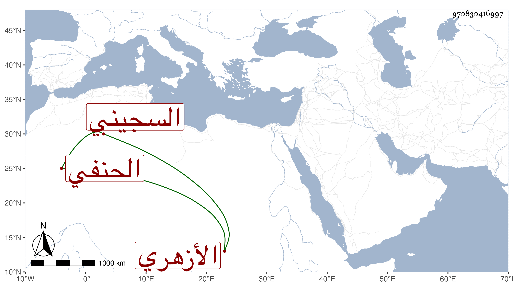

0902Sakhawi.DawLamic.ITO20230111-ara1.EIS1600.970830416997
Biography ID: 970830416997
24
عبد الله بن أحمد بن عبيد الله بن محمد الجمال بن الشهاب السجيني الأصل الأزهري الحنفي هو والماضي أبوه . قرأ القرآن واشتغل يسيرا في الفقه والعربية وقرأ علي في البخارى لأجل قراءته فيه عن أبيه بتربة الأشرف فايتباه ثم استقلالا بعده ، وتكسب بالشهادة وكان لا بأس به . مات في صفر سنة ست وثمانين عقب والده بيسير رحمه الله وعوضه الجنة .
